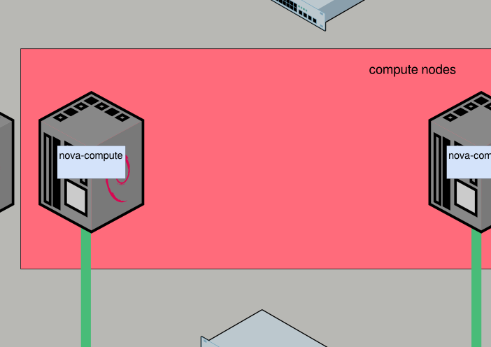
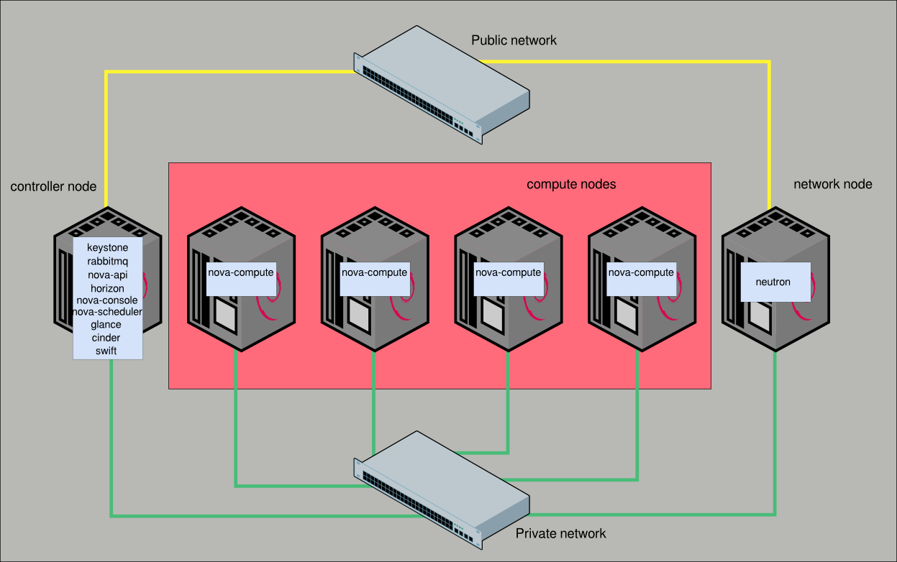
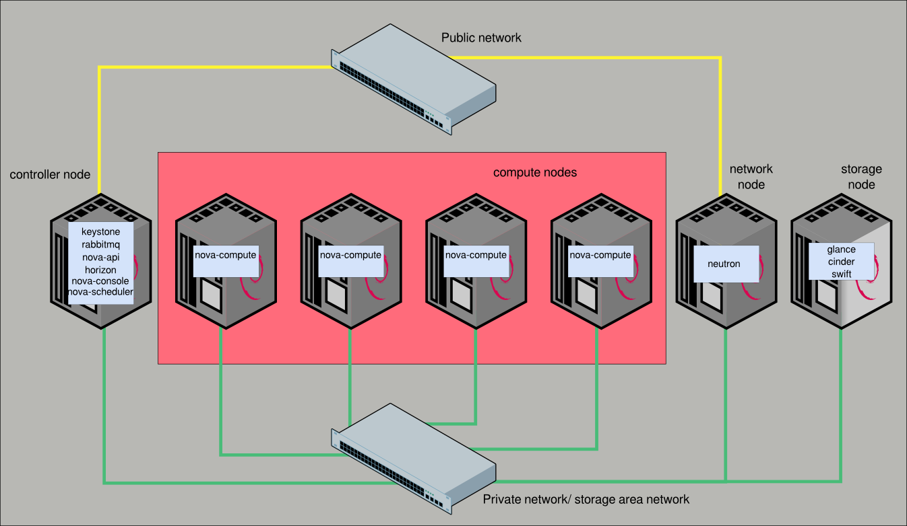

Tipos de nodos
- Un cloud de OpenStack se compone de varios equipos (nodos) con
diferentes funciones dependiendo de los componentes de OpenStack
que tenga instalados
- Nodo controlador (Controller node): Nodo encargado de
la gestión de las instancias con nova y de la orquestación del
resto de componentes
- Nodo de computación (Compute node): Nodo encargado de
la ejecución de las instancias como máquinas virtuales sobre un
hipervisor.
- Nodo de red (Network node): Nodo encargado de la
comunicación de las redes internas con el exterior
- Nodo de almacenamiento (storage node): Nodo encargado
de la gestión del almacenamiento.
Nodo de computación
- En este nodo se instalan los siguientes componentes:
- Hypervisor
- Nova-compute
- Plugin de red (OpenvSwitch por ejemplo)
- Configuración muy sencilla
- Es muy fácil ampliar el número de nodos de computación en un cloud
Nodo de red
- En este nodo se instalan todos los componentes de red:
- neutron-dhcp
- neutron-l3
- neutron-metadata
- neutron server
- Plugins de red
- En el nodo de red se configura el bridge exterior para comunicar las
instancias con el exterior
Nodo de almacenamiento
- Los componentes que se instalen dependen mucho de la opción de
almacenamiento elegida
- De forma general podríamos instalar los componentes de Glance, cinder y
Swift
Nodo controlador
- Se instalan los componentes de nova que controlan y gestionan el cloud:
nova-api y nova-scheduler
- Otros componentes que suelen instalarse en este nodo:
- Keystone
- Servidor de bases de datos
- Servidor AMQP
- Horizon
- nova-consoleproxy
- Ceilometer
- Heat
OpenStack. Arquitectura lógica

Cloud con un solo nodo
- Utilizado para pruebas
- Todos los componentes se instalan en un solo equipo
- Recomendado para conocer OpenStack
- Fácil instalación
1 Controlador + n Computación
- En el nodo controlador se instalan los componentes de los nodos de red y
almacenamiento
- Se utiliza uno o varios equipos potentes como nodos de computación
- Fácilmente ampliable añadiendo nodos de computación
1 Controlador + n Computación

1 Controlador + 1 Red + n Computación
- Un nodo de red con todos los componentes de neutron
- Uno o varios nodos de computación donde se ejecutan las instancias
- Un nodo controlador con el resto de componentes
1 Controlador + 1 Red + n Computación

1 Controlador + 1 Red + n Computación + Almacenamiento
- Un nodo de red con todos los componentes de neutron
- Uno o varios nodos de computación donde se ejecutan las instancias
- Un nodo con Cinder, Glance y en su caso Swift
- Opcionalmente varios nodos más para swift, gluster o ceph como solución
de almacenamiento distribuida
- Un nodo controlador con el resto de componentes
1 Controlador + 1 Red + n Computación + Almacenamiento

Alta disponibilidad
- Eliminación de SPOF:
- Duplicación de los nodos de red y controlador
- Duplicación de los dispositivos de red
- Servicios Stateless o Stateful
- Inclusión de pacemaker y corosync
- Almacenamiento distribuido
- Migración en vivo de instancias